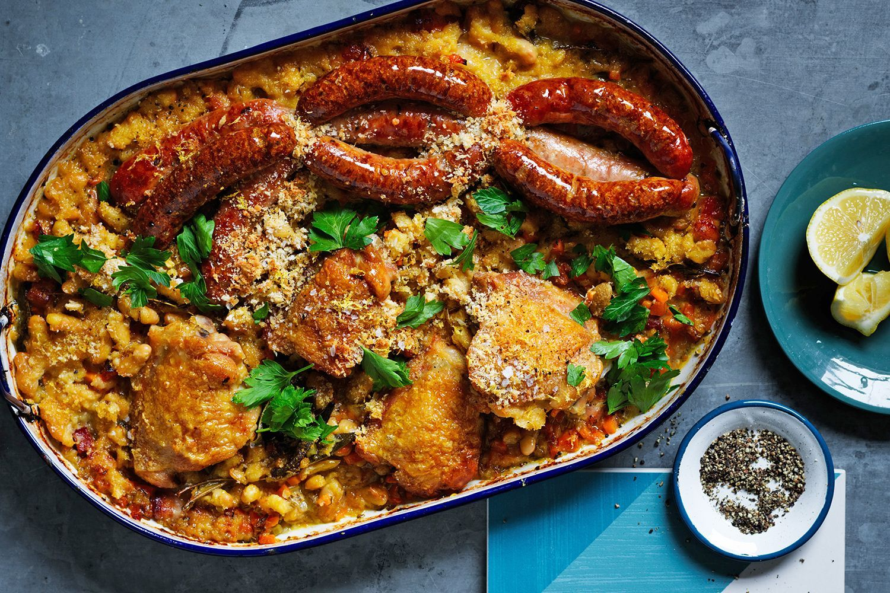
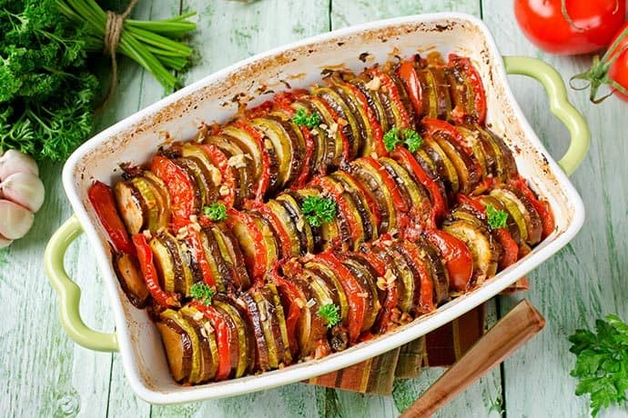
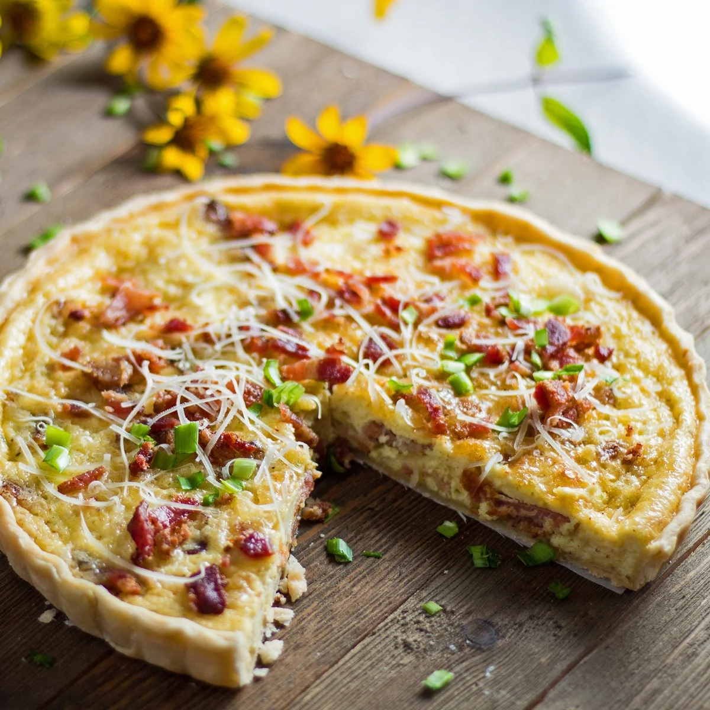

FRENCH CUISINE
 Coq au Vin
Coq au Vin
Coq au vin is a classic French dish that consists of chicken that is cooked in red wine, along with mushrooms, onions, and bacon. The dish originated in the Burgundy region of France, where it was traditionally made with an older rooster that was tough and needed to be cooked for a long time.

Cassoulet
Cassoulet is a traditional French dish that originated in the south of France. It is a hearty stew that typically contains white beans, various meats, and a variety of vegetables and herbs. To make cassoulet, the ingredients are cooked together slowly in a large earthenware pot called a cassole.

Ratatouille
Ratatouille is a traditional French vegetable stew that originated in the Provence region of France. It is typically made with a variety of fresh vegetables, such as eggplant, zucchini, bell peppers, onions, and tomatoes, that are cooked slowly until they are tender and flavorful.
 Beef bourguignon
Beef bourguignon
Beef bourguignon is a classic French stew that originated in the Burgundy region of France. The dish is made with beef that is cooked slowly in red wine, along with vegetables, herbs, and bacon. Beef bourguignon is often served with mashed potatoes or crusty bread to soak up the delicious sauce.

Quiche Lorraine
Quiche Lorraine is a classic French savory tart that is made with a pastry crust and a filling of eggs, cream, bacon, and cheese. Quiche Lorraine can be served hot or cold, and is often enjoyed as a main course for lunch or dinner. It is a versatile dish that can be adapted to include a variety of ingredients, such as spinach, mushrooms, or onions.